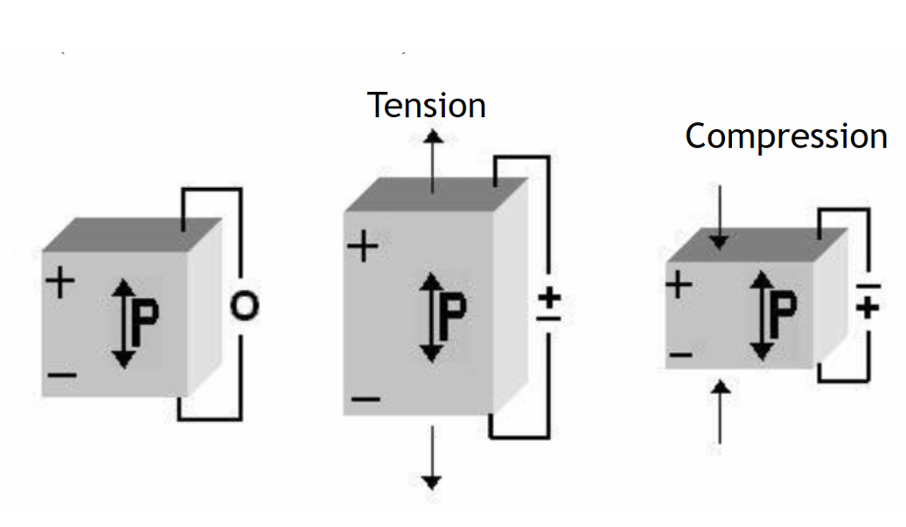
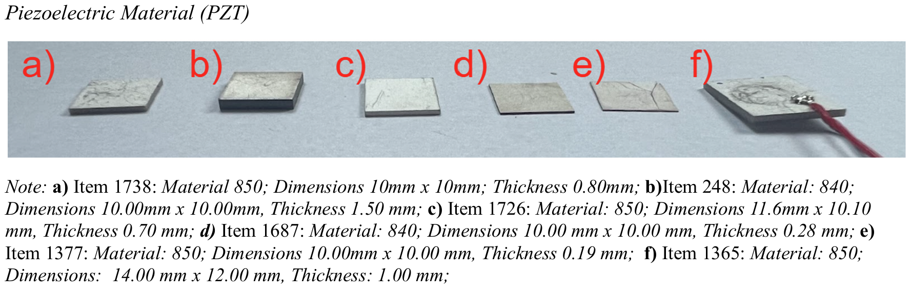
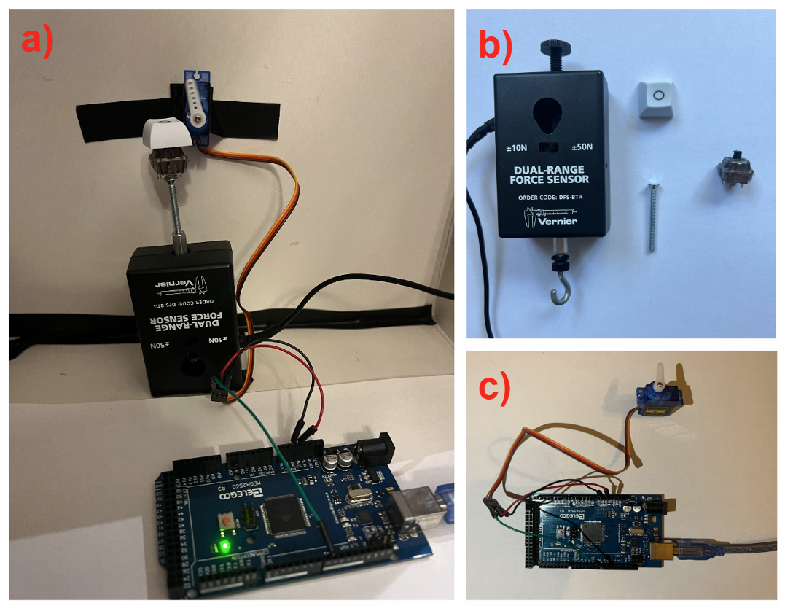
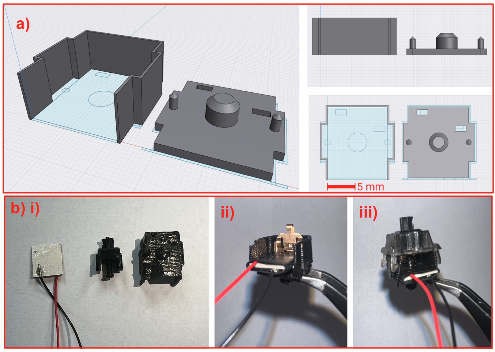
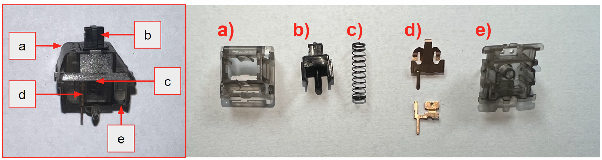
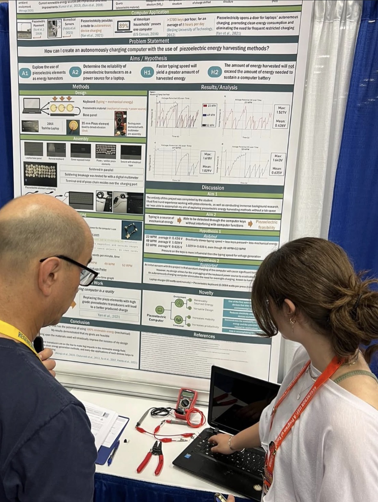

Project story
In a science course exercise I first sketched the idea that typing on laptops might be a small, widely-available source of mechanical energy. After COVID disrupted opportunities for internships, I taught myself the tools — reading ~100 papers, emailing and Zooming with researchers, learning 3D modelling and printing, and ordering/assembling materials. What began as a classroom exercise turned into a multi-year independent research project: building prototypes, designing tests, presenting at ISEF (2023 +2024), earning 4th place in Energy: Sustainable Materials & Design and a provisional patent, and iterating toward a single reproducible energy-harvesting computer key that integrates piezoelectric material into a mechanical switch.
This page summarizes the project’s main discoveries and includes both poster and powerpoint presentations as well as a copy of my full research paper.
Poster Presentation (ISEF 2024)
Paper summary by section
Introduction
The paper motivates using piezoelectric energy harvesting to reduce everyday device dependence on non-renewable electricity. It identifies laptops as a high-impact target (many devices, frequent charging) and frames keystroke mechanical energy as an overlooked, distributed source worth exploring.

Methods & Key Design Decisions
Two phases: Phase I tested chained piezo disks; Phase II engineered a reproducible single-key design with a piezo plate beneath a modified switch stem. Controlled tests used a Vernier force probe and an automated actuator for repeatable keystrokes.

Results
Piezo elements produced measurable voltage (bench peaks ~0.8–2.4 V). The single keyed prototype delivered up to ~0.403 V per keystroke under controlled force. Chaining/reworking reduced some outputs; material geometry mattered more than typing speed.

Discussion
Feasible at the proof-of-concept level. Thin piezo plates performed better; brittleness and assembly variability limit broader adoption. Reproducible single-key designs improved cross-material comparison.

Limitations, Future Work & Conclusion
Limited by available flexible piezo materials and PZT brittleness. Future work: test modern flexible transducers, optimize electrodes, and refine integration for higher, more reliable energy capture.

Project photos

